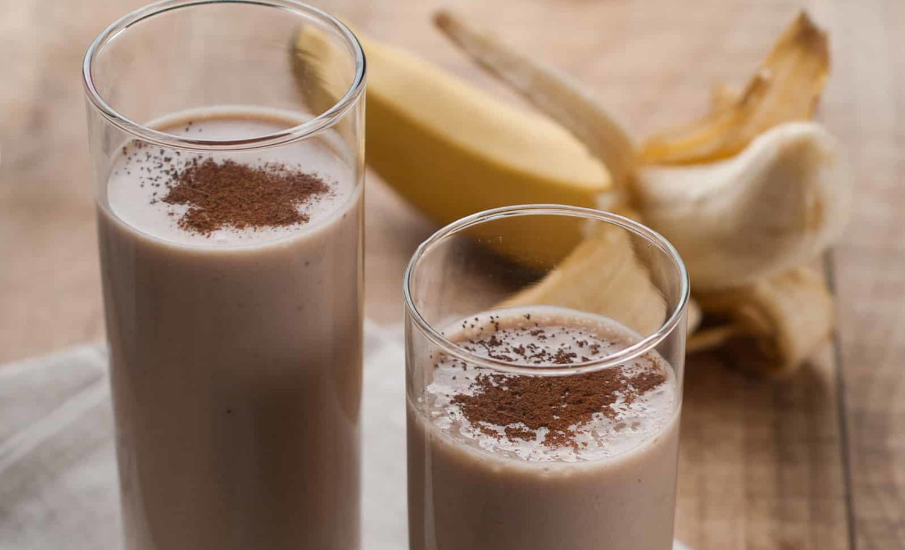

Protein Shake

Description
In this recipe I'll show you how to make a delicious protein shake to milk the most out of your gym gains. This shake will probably taste better than the majority of protein shakes out there as protein shakes don't have the best track record for tasting good.
Ingredients
- 6-8 fl oz milk
- 1-2 scoops protein powder
- 1 banana
- Handful of berries
- 2 tbsp peanut butter
- 2 pieces of ice
Steps
- Put ingredients into blender
- Blend on high until smooth consistency, then pour into cup and enjoy
Back to home